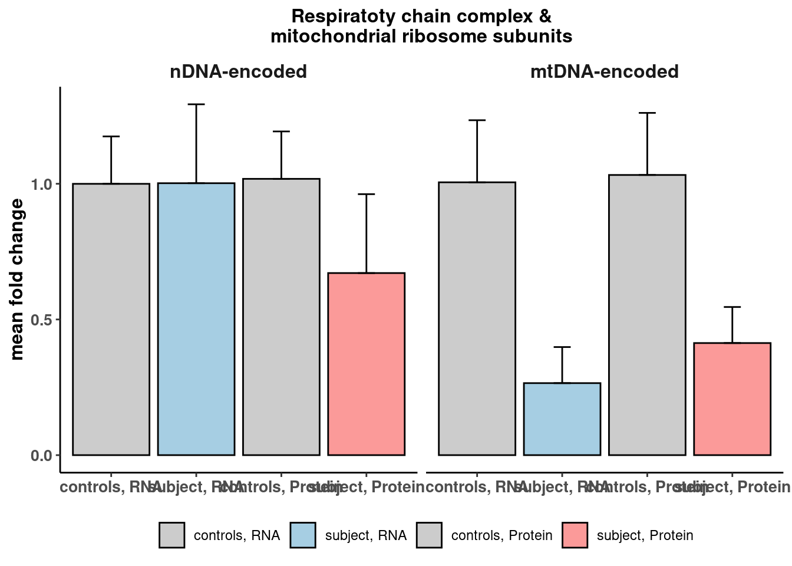

source(snakemake@input$config)
# Read integrated omics file
# rp <- readRDS("/s/project/mitoMultiOmics/multiOMICs_integration/processed_data/integration/patient_omics.RDS") %>% as.data.table()
rp <- readRDS(snakemake@input$patient_omics) %>% as.data.table()
# Read mito complexes
# compl <- fread("/s/project/mitoMultiOmics/multiOMICs_integration/datasets/HGNC_mito_groups.tsv")
compl <- fread(snakemake@input$mito_groups)
compl <- compl[ COMPLEX %in% c("mRibo", "RCCI", "RCCII", "RCCIII", "RCCIV", "RCCV"), ]
compl[, gt := "nDNA-encoded"]
compl[Chromosome == "mitochondria", gt := "mtDNA-encoded"]
compl <- compl[ , .( geneID, gt)]
rp <- rp[ geneID %in% compl$geneID, .(SAMPLE_ID, geneID, RNA_FC, PROTEIN_FC)]
rp <- merge(rp, compl, by = "geneID")
rp[ , case := "controls"]
rp[SAMPLE_ID == "OM91786" , case := "subject"]
rp[, mean_RNA_FC:= mean(RNA_FC, na.rm = T), by = .(gt, case)] #SAMPLE_ID,
rp[, RNA_SD:= sd(PROTEIN_FC, na.rm = T), by = .(gt, case)] #SAMPLE_ID,
rp[, mean_PROTEIN_FC:= mean(PROTEIN_FC, na.rm = T), by = .(gt, case)] #SAMPLE_ID,
rp[, PROTEIN_SD:= sd(PROTEIN_FC, na.rm = T), by = .( gt, case)] #SAMPLE_ID,
rpx <- rp[ , .(gt, case, mean_RNA_FC,RNA_SD, mean_PROTEIN_FC, PROTEIN_SD)]
rpx <- rpx[!duplicated(rpx)]
rp_r <- rpx[ , .( gt, case, mean_RNA_FC, RNA_SD)]
colnames(rp_r) <- c( "gt", "case", "mean_fold_change", "SD" )
rp_r[ , assay := "RNA"]
rp_p <- rpx[ , .(gt, case, mean_PROTEIN_FC, PROTEIN_SD)]
colnames(rp_p) <- c("gt", "case", "mean_fold_change", "SD" )
rp_p[ , assay := "Protein"]
rpx <- rbind(rp_r, rp_p)
rpx[ , case_assay := paste0(case, ", ", assay)]
rpx$case_assay <- factor(rpx$case_assay, levels = c("controls, RNA", "subject, RNA",
"controls, Protein","subject, Protein" ) )
rpx$gt <- factor(rpx$gt, levels = c("nDNA-encoded", "mtDNA-encoded") )
fill_assay <- c( "controls, RNA" = "gray80",
"subject, RNA" = "#A6CEE3",
"controls, Protein" = "gray80",
"subject, Protein" = "#FB9A99")
fig <- ggplot(rpx, aes(case_assay, mean_fold_change, fill = case_assay))+
geom_bar(stat='identity', color = "black")+
geom_errorbar(aes(ymin=mean_fold_change, ymax=mean_fold_change+SD), width=.2,
position=position_dodge(.9))+
ggtitle("Respiratoty chain complex &\nmitochondrial ribosome subunits")+
ylab("mean fold change") +
theme_classic()+
scale_fill_manual( values = fill_assay)+
facet_wrap( ~gt, ncol = 2) +
theme(plot.title = element_text( size=12, face="bold", hjust = 0.5),
axis.title.y= element_text( size=12, face="bold"),
axis.title.x= element_blank(),
axis.text.x = element_text(face="bold", size=10),
axis.text.y= element_text(face="bold", size=10),
legend.title = element_blank(),
legend.position = "bottom",
strip.background = element_blank(),
strip.text = element_text(face="bold", size=12),
panel.grid.major = element_blank(),
panel.grid.minor = element_blank())
fig

pdf(snakemake@output$fig, # "/s/project/mitoMultiOmics/multiOMICs_integration/Figures/Fig3_h.pdf",
width = 5, height =5, useDingbats=FALSE )
print(fig)
dev.off()
## png
## 2
IyctLS0KIycgdGl0bGU6IEZpZ3VyZSAzaCBSQ0MgYW5hbHlzaXMKIycgYXV0aG9yOiBzbWlybm92ZAojJyB3YjoKIycgIGlucHV0OgojJyAgLSBjb25maWc6ICdzcmMvY29uZmlnLlInCiMnICAtIHBhdGllbnRfb21pY3M6ICdgc20gY29uZmlnWyJQUk9DX0RBVEEiXSArICIvaW50ZWdyYXRpb24vcGF0aWVudF9vbWljcy5SRFMiYCcKIycgIC0gbWl0b19ncm91cHM6ICdgc20gY29uZmlnWyJEQVRBU0VUUyJdICsgIi9IR05DX21pdG9fZ3JvdXBzLnRzdiJgJwojJyAgb3V0cHV0OgojJyAgLSBmaWc6ICdgc20gY29uZmlnWyJGSUdVUkVfRElSIl0gKyAiL0ZpZzNfaC5wZGYiYCcKIycgb3V0cHV0OiAKIycgICBodG1sX2RvY3VtZW50OgojJyAgICBjb2RlX2ZvbGRpbmc6IGhpZGUKIycgICAgY29kZV9kb3dubG9hZDogVFJVRQojJy0tLQoKc291cmNlKHNuYWtlbWFrZUBpbnB1dCRjb25maWcpCgoKIyBSZWFkIGludGVncmF0ZWQgb21pY3MgZmlsZSAKIyBycCA8LSByZWFkUkRTKCIvcy9wcm9qZWN0L21pdG9NdWx0aU9taWNzL211bHRpT01JQ3NfaW50ZWdyYXRpb24vcHJvY2Vzc2VkX2RhdGEvaW50ZWdyYXRpb24vcGF0aWVudF9vbWljcy5SRFMiKSAlPiUgYXMuZGF0YS50YWJsZSgpCnJwIDwtIHJlYWRSRFMoc25ha2VtYWtlQGlucHV0JHBhdGllbnRfb21pY3MpICU+JSBhcy5kYXRhLnRhYmxlKCkKCgojIFJlYWQgbWl0byBjb21wbGV4ZXMgCiMgY29tcGwgPC0gZnJlYWQoIi9zL3Byb2plY3QvbWl0b011bHRpT21pY3MvbXVsdGlPTUlDc19pbnRlZ3JhdGlvbi9kYXRhc2V0cy9IR05DX21pdG9fZ3JvdXBzLnRzdiIpCmNvbXBsIDwtIGZyZWFkKHNuYWtlbWFrZUBpbnB1dCRtaXRvX2dyb3VwcykKY29tcGwgPC0gY29tcGxbIENPTVBMRVggJWluJSBjKCJtUmlibyIsICJSQ0NJIiwgIlJDQ0lJIiwgIlJDQ0lJSSIsICJSQ0NJViIsICJSQ0NWIiksIF0KY29tcGxbLCBndCA6PSAibkROQS1lbmNvZGVkIl0KY29tcGxbQ2hyb21vc29tZSA9PSAibWl0b2Nob25kcmlhIiwgZ3QgOj0gIm10RE5BLWVuY29kZWQiXQpjb21wbCA8LSBjb21wbFsgLCAuKCBnZW5lSUQsIGd0KV0KCnJwIDwtIHJwWyBnZW5lSUQgJWluJSBjb21wbCRnZW5lSUQsIC4oU0FNUExFX0lELCBnZW5lSUQsIFJOQV9GQywgUFJPVEVJTl9GQyldCnJwIDwtIG1lcmdlKHJwLCBjb21wbCwgYnkgPSAiZ2VuZUlEIikKcnBbICwgY2FzZSA6PSAiY29udHJvbHMiXQpycFtTQU1QTEVfSUQgPT0gIk9NOTE3ODYiICwgY2FzZSA6PSAic3ViamVjdCJdCgpycFssIG1lYW5fUk5BX0ZDOj0gbWVhbihSTkFfRkMsIG5hLnJtID0gVCksIGJ5ID0gLihndCwgY2FzZSldICNTQU1QTEVfSUQsIApycFssIFJOQV9TRDo9IHNkKFBST1RFSU5fRkMsIG5hLnJtID0gVCksIGJ5ID0gLihndCwgY2FzZSldICNTQU1QTEVfSUQsIAoKcnBbLCBtZWFuX1BST1RFSU5fRkM6PSBtZWFuKFBST1RFSU5fRkMsIG5hLnJtID0gVCksIGJ5ID0gLihndCwgY2FzZSldICNTQU1QTEVfSUQsIApycFssIFBST1RFSU5fU0Q6PSBzZChQUk9URUlOX0ZDLCBuYS5ybSA9IFQpLCBieSA9IC4oIGd0LCBjYXNlKV0gI1NBTVBMRV9JRCwgCgpycHggPC0gcnBbICwgLihndCwgY2FzZSwgbWVhbl9STkFfRkMsUk5BX1NELCAgbWVhbl9QUk9URUlOX0ZDLCBQUk9URUlOX1NEKV0KcnB4IDwtIHJweFshZHVwbGljYXRlZChycHgpXQoKcnBfciA8LSBycHhbICwgLiggZ3QsIGNhc2UsIG1lYW5fUk5BX0ZDLCBSTkFfU0QpXQpjb2xuYW1lcyhycF9yKSA8LSBjKCAiZ3QiLCAiY2FzZSIsICJtZWFuX2ZvbGRfY2hhbmdlIiwgIlNEIiApCnJwX3JbICwgYXNzYXkgOj0gIlJOQSJdCgpycF9wIDwtIHJweFsgLCAuKGd0LCBjYXNlLCBtZWFuX1BST1RFSU5fRkMsIFBST1RFSU5fU0QpXQpjb2xuYW1lcyhycF9wKSA8LSBjKCJndCIsICJjYXNlIiwgIm1lYW5fZm9sZF9jaGFuZ2UiLCAiU0QiICkKcnBfcFsgLCBhc3NheSA6PSAiUHJvdGVpbiJdCgpycHggPC0gcmJpbmQocnBfciwgcnBfcCkKcnB4WyAsIGNhc2VfYXNzYXkgOj0gcGFzdGUwKGNhc2UsICIsICIsIGFzc2F5KV0KCnJweCRjYXNlX2Fzc2F5IDwtIGZhY3RvcihycHgkY2FzZV9hc3NheSwgbGV2ZWxzID0gYygiY29udHJvbHMsIFJOQSIsICJzdWJqZWN0LCBSTkEiLCAKICAgICAgICAgICAgICAgICAgICAgICAgICAgICAgICAgICAgICAgICAgICAgICAgICAgICJjb250cm9scywgUHJvdGVpbiIsInN1YmplY3QsIFByb3RlaW4iICkgKQoKcnB4JGd0IDwtIGZhY3RvcihycHgkZ3QsIGxldmVscyA9IGMoIm5ETkEtZW5jb2RlZCIsICJtdEROQS1lbmNvZGVkIikgKQoKZmlsbF9hc3NheSA8LSBjKCAgImNvbnRyb2xzLCBSTkEiID0gImdyYXk4MCIsICAKICAgICAgICAgICAgICAgICAgInN1YmplY3QsIFJOQSIgPSAiI0E2Q0VFMyIsCiAgICAgICAgICAgICAgICAgICJjb250cm9scywgUHJvdGVpbiIgPSAiZ3JheTgwIiwgCiAgICAgICAgICAgICAgICAgICJzdWJqZWN0LCBQcm90ZWluIiA9ICIjRkI5QTk5IikKCmZpZyA8LSBnZ3Bsb3QocnB4LCBhZXMoY2FzZV9hc3NheSwgbWVhbl9mb2xkX2NoYW5nZSwgZmlsbCA9IGNhc2VfYXNzYXkpKSsKICBnZW9tX2JhcihzdGF0PSdpZGVudGl0eScsIGNvbG9yID0gImJsYWNrIikrCiAgZ2VvbV9lcnJvcmJhcihhZXMoeW1pbj1tZWFuX2ZvbGRfY2hhbmdlLCB5bWF4PW1lYW5fZm9sZF9jaGFuZ2UrU0QpLCB3aWR0aD0uMiwKICAgICAgICAgICAgICAgIHBvc2l0aW9uPXBvc2l0aW9uX2RvZGdlKC45KSkrCiAgZ2d0aXRsZSgiUmVzcGlyYXRvdHkgY2hhaW4gY29tcGxleCAmXG5taXRvY2hvbmRyaWFsIHJpYm9zb21lIHN1YnVuaXRzIikrCiAgeWxhYigibWVhbiBmb2xkIGNoYW5nZSIpICsKICB0aGVtZV9jbGFzc2ljKCkrCiAgc2NhbGVfZmlsbF9tYW51YWwoIHZhbHVlcyA9IGZpbGxfYXNzYXkpKwogIGZhY2V0X3dyYXAoIH5ndCwgbmNvbCA9IDIpICsKCiAgdGhlbWUocGxvdC50aXRsZSA9IGVsZW1lbnRfdGV4dCggc2l6ZT0xMiwgZmFjZT0iYm9sZCIsIGhqdXN0ID0gMC41KSwKICAgICAgICBheGlzLnRpdGxlLnk9IGVsZW1lbnRfdGV4dCggc2l6ZT0xMiwgZmFjZT0iYm9sZCIpLAogICAgICAgIGF4aXMudGl0bGUueD0gZWxlbWVudF9ibGFuaygpLAogICAgICAgIGF4aXMudGV4dC54ID0gZWxlbWVudF90ZXh0KGZhY2U9ImJvbGQiLCAgc2l6ZT0xMCksCiAgICAgICAgYXhpcy50ZXh0Lnk9IGVsZW1lbnRfdGV4dChmYWNlPSJib2xkIiwgIHNpemU9MTApLAogICAgICAgIGxlZ2VuZC50aXRsZSA9IGVsZW1lbnRfYmxhbmsoKSwKICAgICAgICBsZWdlbmQucG9zaXRpb24gPSAiYm90dG9tIiwKICAgICAgICBzdHJpcC5iYWNrZ3JvdW5kID0gZWxlbWVudF9ibGFuaygpLAogICAgICAgIHN0cmlwLnRleHQgPSBlbGVtZW50X3RleHQoZmFjZT0iYm9sZCIsIHNpemU9MTIpLAogICAgICAgIHBhbmVsLmdyaWQubWFqb3IgPSBlbGVtZW50X2JsYW5rKCksIAogICAgICAgIHBhbmVsLmdyaWQubWlub3IgPSBlbGVtZW50X2JsYW5rKCkpCgpmaWcKCnBkZihzbmFrZW1ha2VAb3V0cHV0JGZpZywgIyAiL3MvcHJvamVjdC9taXRvTXVsdGlPbWljcy9tdWx0aU9NSUNzX2ludGVncmF0aW9uL0ZpZ3VyZXMvRmlnM19oLnBkZiIsICAKICAgIHdpZHRoID0gNSwgaGVpZ2h0ID01LCAgdXNlRGluZ2JhdHM9RkFMU0UgKQpwcmludChmaWcpIApkZXYub2ZmKCkKCgoKCgo=